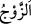
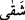
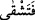

“ kadın olsun, erkek olsun karşı cinsten olmak şartıyla her ferdin eşine verilen
isimdir.
İblis’in düşman olmasının çeşitli sebepleri vardır:
1- O, kıskançtı. Allâh’ın Âdem (a.s.)’a verdiği nimetleri görünce ona hased etti ve
ona düşman oldu. Burada bir kimseye hased edenin ona düşman olacağına, onun helâk
olmasını arzu edeceğine ve durumunu ifsâd etmek için çalışacağına işâret vardır.
2- Âdem (a.s.), genç ve âlimdi. İblis ise ihtiyar ve câhildi. Çünkü o, aslında var olan
faziletle, İblis’ten üstün olduğunu isbat etmişti. Halbuki İblis câhildi. Câhil ihtiyar,
dâimâ genç âlime düşman olur.
Şehrin şeyhi/âlimi ehl-i dil olanların esrârına ta‘n eyledi
Çünkü insan bilmediği şeye dâimâ düşman olur
3- İblis ateşten, Âdem ise su ve topraktan yaratılmıştır. İkisinin asılları arasında
düşmanlık vardır. Bu düşmanlık bâkî kalmıştır.
“Sakın sizi cennetten çıkarmasın;” Yani, sizin oradan çıkartılmanıza sebep olmasın.
Bu ifâde, fiilin sebebe isnâdı kabîlindendir. Yoksa hakîkatte onu cennetten çıkaran
Allah’tır. Her ne kadar ifadenin zâhiri, İblis’i onları çıkarmaktan nehiy olsa da aslında
murad edilen, Hz. Adem ile Havvâ’yı şeytanın kendilerini cennetten çıkarmasına
sebebiyet verecek bir durumda olmaktan yasaklamaktır.
“Sonra yorulur, sıkıntı çekersin!” Şakâvetin Hz. Âdem’e isnâdı fâsılalara riâyet
etmek için ve bu konudaki asâleti sebebiyledir.
el-Müfredât’ta der ki: “Şakâvet, saâdetin zıddıdır. Saâdet de iki kısımdır: Dünyevî
saâdet, uhrevî saâdet. Sonra dünyevî saâdet de üç kısımdır: Nefsî, bedenî ve hâricî
saâdet. Şakâvet için de bu kısımlar geçerlidir. Uhrevî şakâvet hakkında Allah şöyle
buyurur: “İmdi benden size bir hidayet geldiği zaman kim benim hidâyetime uyarsa
o, sapmaz ve sıkıntıya düşmez.” (Tâhâ, 20/123) Dünyevi olan hakkında ise
açıklamakta olduğumuz âyette şöyle buyrulmuştur: “Sakın sizi cennetten çıkarmasın,
sonra yorulur, sıkıntı çekersin, bedbaht olursun.”
Bazen “, yorgunluk anlamında da kullanılır. Nitekim el-Kâmûs’ta: “Şaka, şiddet
ve zorluk demektir.” der. Buna göre âyetin mânâsı şöyle olur: “Senin oradan çıkmana
sebep olacak işlerden sakın, sonra yorulursun.” Bu dünyevî yorgunluk ise ekip biçmek,
hasad etmek, öğütmek, hamur yoğurmak ve ekmek yapmak gibi insanların hayatlarını
devam ettirmek için yapmadan edemeyecekleri şeylerdir. Nitekim sonraki âyet de bunu
te’yid etmektedir.
Kâşifî der ki: “ zahmet ve meşakkate düşersin demektir. Yâni cennetten dışarı
çıkınca elinin emeği ve alnının teri ile geçinmek için gerekli şartları hazırlamak
gerekir.”
Saîd b. Cübeyr (r.a.) şöyle demiştir: “Âdem (a.s.)’a kırmızı bir öküz indirildi, onunla